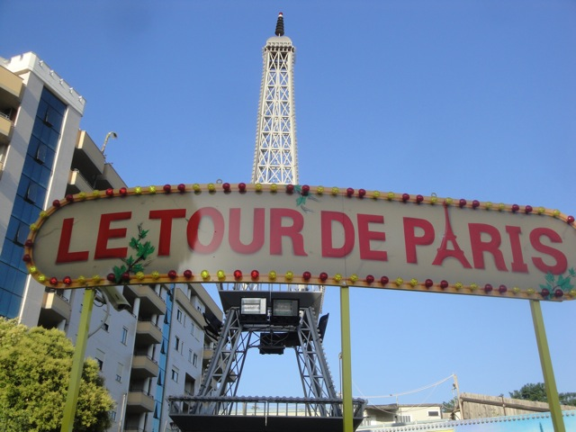

| |
Le Tour de Paris Review
We're here at Parco Morelli, where we'll be reviewing their kiddy coaster. Cause admit it. That's the only reason we're here. So let's climb in the car, and off we go. We go around a spiral lifthill. It's only 10 ft. Pathetic. We can jump from this height onto the concrete. Hell, I've done that before. And then, a spiral drop. It's only 10 feet. But whatever. Wee. We head around a puny model of the Eiffel Tower, because...for some reason, there's a Paris themed kiddy coaster in the middle of Rome. I still don't get it. And then we get at least 6 more laps on this thing. Dammit!! I'm really thinking of jumping at this point. *Sigh* Well, at least I got my credit. Cha-Ching.
2/10
Location: Parco Morelli
Opened: 2011
Built by: SBF Visa Group
Last Ridden: June 16, 2012
I have ridden this exact same ride at the following parks.
Fun Park
Le Tour de Paris Photos

Home
|